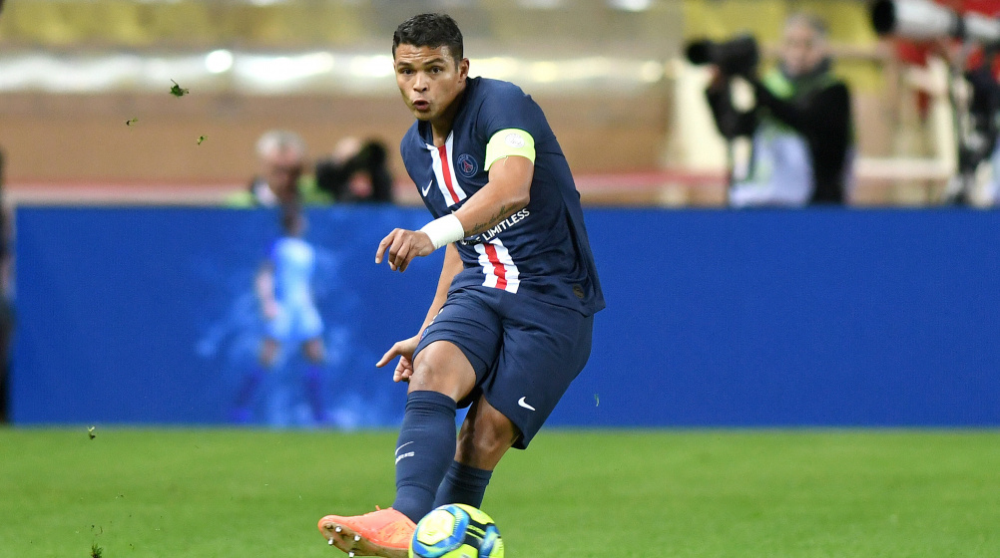

The most important attributes a centre back should possess are Awareness and Positioning. By knowing where to be at all times, the centre back ensures no opposition player has time or space to take a shot at a goal or assist other teammates
Having the ability to clear the ball to a teammate, requires awareness and great reading of the game. The main attributes a scout looks for in a Central Defender are: Ball Control (becoming more important for defenders) Bravery in attempting challenges.
Defenders need to be able to control the game, keep possession and play forwards. The key is to keep pressure on the opposing team to stop them from creating chances and create space when playing forwards.
1v1 Defending
What makes a good defender in football?
A great defender can win a team games with last-ditch tackles, pin-point passing leading to a successful counter-attack, and quality leadership from the back. Poor defenders lose their team games and make life difficult for those around them
Defensive skills in football include:
So i hope these help or will help you.
And remember to never look back,never quit and always keep moving forward.